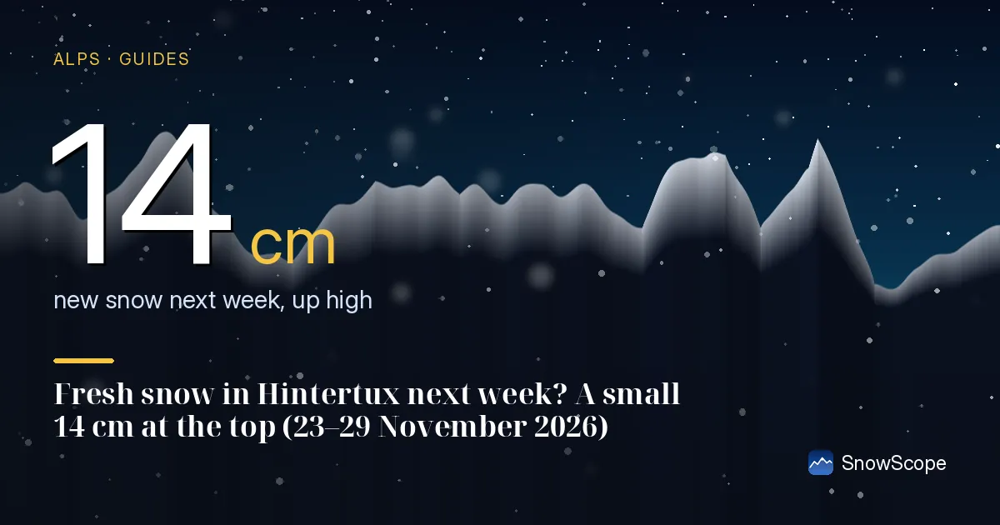

Fresh snow in Hintertux next week? A small 14 cm at the top (23–29 November 2026)
Don't plan a powder trip to Hintertux on next week's numbers alone. From Monday 23 to Sunday 29 November we expect 14 cm at the top (3–24 cm) and 12 cm at the base, so the week is a light refresh rather than a storm.
See the live snow forecast for Hintertux in the SnowScope appSnow depth, powder alerts and the 3D map, free.

The base it lands on
Unlike the French side of the Alps, Hintertux sees only 7 cm up high from 17 to 20 November (4–11 cm). So next week's snow is most of the fortnight's story here.
Top, middle and base
Read from the top down: 14 cm near 3000 m, 13 cm near 2400 m, 12 cm near 1600 m. The low-to-high spread is 3–24 cm at the top and 2–22 cm at the base.
The snow is not spread evenly. The days that matter at the top are Wednesday 25 (3 cm, up to 5), Friday 27 (3 cm, up to 4) and Sunday 29 (3 cm, up to 6); the rest of the week is close to dry.
Where the snow line sits
Little is lost on the way down: 12 cm around 1600 m against 14 cm up high. On these numbers the precipitation falls as snow almost everywhere in Hintertux.
Hintertux is a glacier area that hardly needs a storm to ski; new snow mostly freshens the surface.
Next door, the same week
Same week, same measure (top of each resort): Mayrhofen (13 km away) 17 cm; Stubai Glacier (42 km away) 14 cm; Obergurgl (52 km away) 13 cm. Hintertux itself: 14 cm.
A few centimetres either way is inside the forecast's own margin, so Hintertux and its neighbours are effectively level.
Where the good snow will be
Wednesday 25 November brings the most, 3 cm at the top and 5 cm at best: enough to soften the pistes, not enough for a powder day.
Go high: depth is safest on the Gefrorene Wand glacier under the Olperer, and the best skiing should be on the glacier slopes, open nearly the whole year. Treat Hintertux village at the end of the Tux valley as the weak point.
The range, not just the number
Not very. The high case gives 24 cm up top, the low case just 3 cm, so whether Hintertux gets a real fall depends on a storm track that is still undecided.
The days closest to now are the most reliable; the end of the week is the least.
Tips for skiers
- Fresh snow on a young snowpack: read the regional avalanche service of the province before any off-piste plan.
- Opening dates are the resort's call; our numbers only say how much snow is coming.
- With 14 cm at the top, this is not a week to chase powder in Hintertux.
More maps (external sites)
About these numbers
Snow numbers: our two-week snow forecast issued on 16 November 2026, read at three heights of the resort (top, mid-mountain, base). Each total is the middle of a range, with a low and a high case. These are estimates for the slopes, not resort measurements, and forecasts move from day to day: check the live map before you go.
Cite this report
For research, teaching or the press: the numbers and charts are free to reuse under CC BY 4.0 with this citation.
SnowScope (2026), Fresh snow in Hintertux next week? A small 14 cm at the top (23–29 November 2026), https://snowscope.app/blog/en/2026/11/hintertux-snow-forecast-next-week-23-29-november-2026.html, accessed 2026-11-16
SnowScope (Atlas Labs). (2026, November 16). Fresh snow in Hintertux next week? A small 14 cm at the top (23–29 November 2026). SnowScope snow reports. https://snowscope.app/blog/en/2026/11/hintertux-snow-forecast-next-week-23-29-november-2026.html
BibTeX
@misc{snowscope2026hintertuxsnowforecastnex,
author = {{SnowScope (Atlas Labs)}},
title = {Fresh snow in Hintertux next week? A small 14 cm at the top (23–29 November 2026)},
year = {2026},
month = nov,
howpublished = {\url{https://snowscope.app/blog/en/2026/11/hintertux-snow-forecast-next-week-23-29-november-2026.html}},
note = {Published 2026-11-16 11:45 UTC; accessed 2026-11-16}
}· CC BY 4.0 · Methods, data and tools →
Hintertux: snow and temperature by height, this winter vs last (tools) →
Follow Hintertux
Free: a message when fresh snow is coming, and the forecast every morning.
More snow reports

Ten practical points for a ski trip to Livigno: the roads in, the cold, the duty-free shops, the two ski sides and when the snow is best, from 46 past winters of our snow history.

Ski Livigno for 51.50 EUR per day before December 18 when the snow at the top reaches 30cm in 100 % of past winters.

Plan your December 2026 trip to Les Orres by matching weekly pass prices with our snow history of 46 past winters.